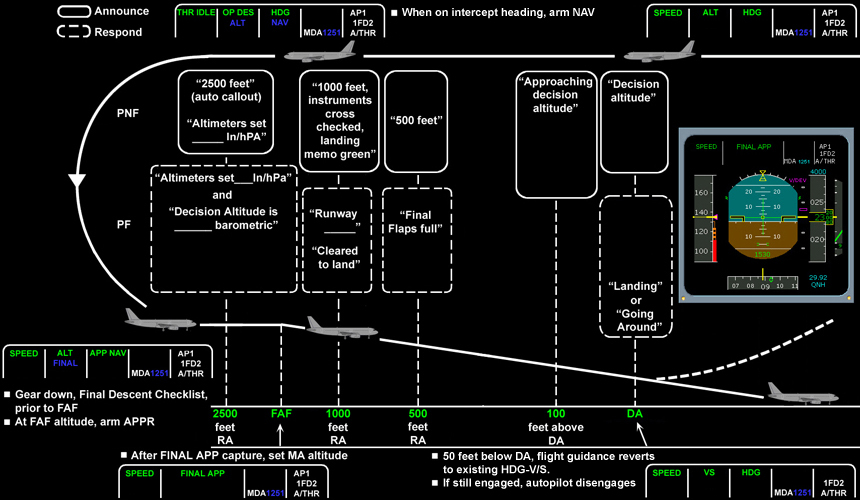
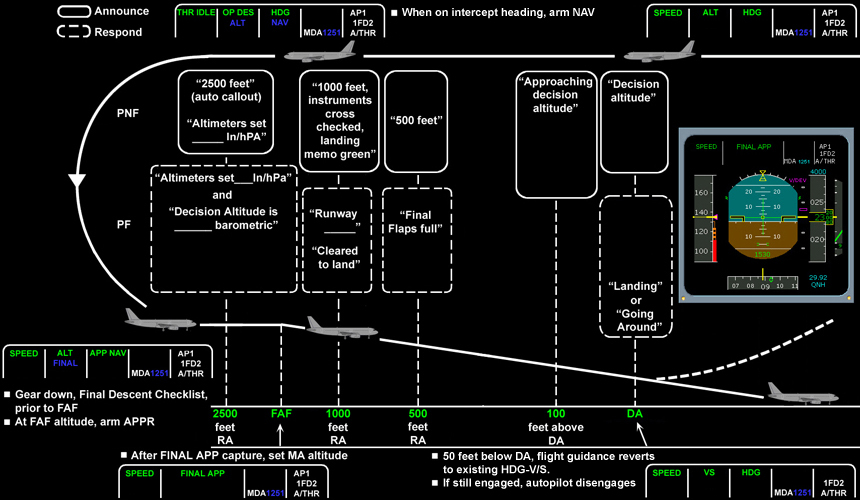

Flight Maneuvers
Managed/Managed Nonprecision Approach
Managed/Managed Approach is used for: GPS, RNAV, VOR, or NDB approaches. Vertical and Lateral; FINAL APP.
Managed/Managed Approach is used for: GPS, RNAV, VOR, or NDB approaches. Vertical and Lateral; FINAL APP.
